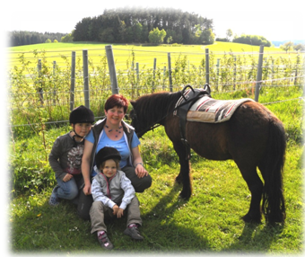
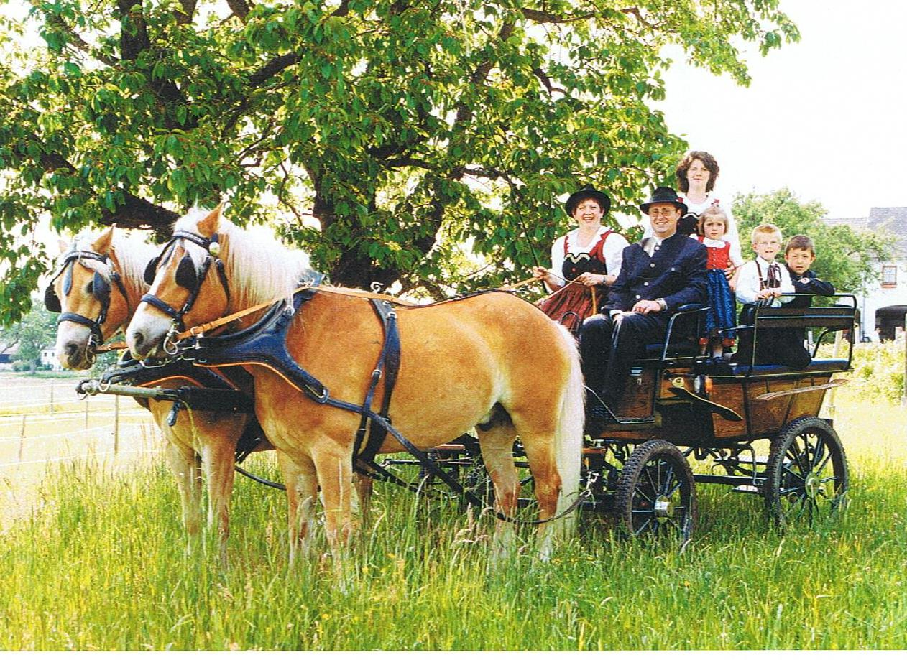
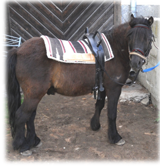
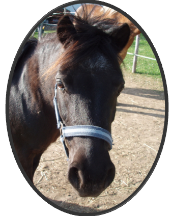

Pferdeerlebnis in Alberndorf
Familie Grasböck

Suchen Sie etwas außergewöhnliches für Ihren besonderen Tag? Eine unvergessliche Fahrt mit 2 Pferdestärken?
Für sämtliche Anlässe und Ereignisse: Hochzeiten, Freizeitfahrten, Firmung, Erstkommunion, Geburtstage. Wir bieten unsere Kutschenfahrten ganzjährig an. In einer ein- oder mehrstündigen Rundfahrt über 3 Gemeindegebiete eröffnet sich eine völlig neue Perspektive. Kommen Sie zur Ruhe und genießen Sie die schöne Mühlviertler Hügellandschaft. Oder lernen sie Ihre eigene Umgebung neu kennen - wir kommen auch zu Ihnen.

Ponyreiten für Kinder: Unsere drei Ponys Sendy, Gismo und Alex stehen unseren kleinen Besuchern für einen Ausritt zur Verfügung. Einlassen auf die Bewegung auf dem Rücken des Pferdes mit allen Sinnen erleben. Reitpädagogische Betreuung ist eine Investition für die geistige, seelische und körperliche Entwicklung Ihres Kindes. Bei einem Spaziergang mit Margarete Grasböck durch Wiesen und Wälder können die Kinder erste Reiterfahrungen sammeln oder bereits Erlerntes vertiefen.

Ein guter Tipp: Schenken Sie Gutscheine an Freunde und Bekannte! Wir organisieren auch einzigartige Kindergeburtstage mit Kutschenfahrt und Ponyreiten und stellen im Anschluss gerne unsere Lagerfeuerstelle zur Verfügung!
Margarete Grasböck
Kelzendorf 8
4211 Alberndorf
Telefon: 07235/89425
Mobil: 0650/2670433
pferdeerlebnis.alberndorf@gmx.at